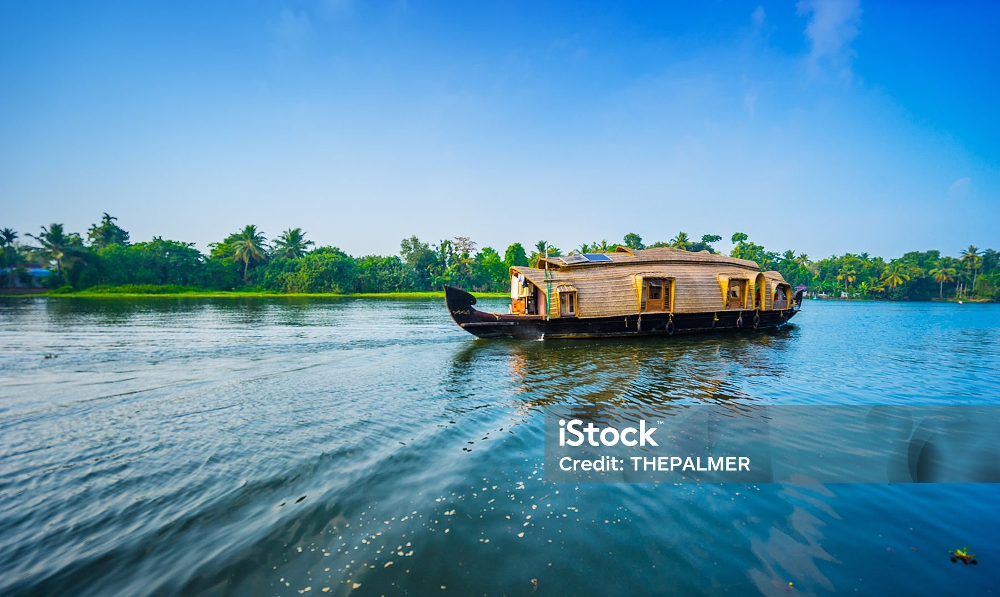

Vacation in kerala

Known for its extensive network of backwaters, Alleppey offers mesmerizing houseboat cruises.The annual Nehru Trophy Boat Race held in Punnamada Lake
Go somewhere
Idukki is famous for its sprawling tea plantations, dense forests Attractions include the hill station of Munnar, the wildlife sanctuary at Periyar, and the Idukki Arch Dam.
Go somewhereKannur, a district in northern Kerala, is renowned for its vibrant Theyyam rituals. Theyyam is an ancient ritualistic art form practiced predominantly in the northern districts of Kerala
Go somewhereCochin, the commercial hub, blends colonial heritage with modernity. It's famous for Fort Kochi, with its Chinese fishing nets, colonial buildings, and artistic cafes. The Mattancherry Palace is significant landmark.
Go somewhereThrissur is the cultural capital of Kerala, known for its vibrant festivals like Thrissur Pooram. The district is home to Vadakkunnathan Temple, Guruvayur Temple, and Athirappilly Falls
Go somewhereThiruvananthapuram, the capital city, boasts of beautiful beaches like Kovalam and Varkala. The city is home to the famous Padmanabhaswamy Temple, Napier Museum, and Kerala State
Go somewhere
Palakkad is known for its scenic beauty with rolling hills, lush greenery, and historic sites. Attractions include Palakkad Fort, Malampuzha Dam, and Silent Valley National Park.Greenery, Fort, Palms.
Go somewhereKottayam is known for its lush greenery, backwaters, and rubber plantations. The district is culturally rich, with a strong tradition of literature and education. It hosts the annual Kottayam Arts and Literary Festival
Go somewhere